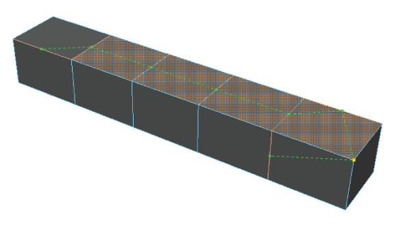

使用“连接工具”(Connect Tool)，可以通过在多边形组件之间插入边，以交互方式连接这些组件。
使用连接工具连接多边形组件
- 通过执行下列操作之一打开该工具：
- 从“建模工具包”(Modeling Toolkit)窗口的“工具”(Tools)部分中，单击
 。
。
- 从主菜单栏中，选择。
- 从标记菜单中，选择“连接工具”(Connect Tool)。（若要打开标记菜单，请在选中对象、顶点、边或面后，按住 Shift 键单击鼠标右键。）
- 从“建模工具包”(Modeling Toolkit)窗口的“工具”(Tools)部分中，单击
- 选择场景中的单个顶点、边或面，然后按住 Shift 键选择其他组件。
选择单条边会自动连接整个环形路径。
提示： 启用对象、世界或拓扑对称，以便在网格的两侧添加边。请参见激活或取消激活对称。 -
此时，您的选择上会出现一条虚线，显示连接的预览。
- 可选：在当前选择中添加或去除组件。按住 Shift 键并单击可添加，按住 Ctrl 键并单击可去除。
- 在将连接烘焙到网格之前，可以从标记菜单快速调整连接工具选项：
- 同时按住 Ctrl 键和 Shift 键并单击鼠标右键，然后选择选项之一。
- 使用鼠标中键向左或向右拖动，可增大或减小选定的值。
- 按 Enter 键。
提示： 也可以在场景的空白区域上单击鼠标右键，然后选择“完成工具”(Complete Tool)，可完成剪切并退出“连接”(Connect)工具。此时，连接已被烘焙到网格。
- 完成组件的连接后，选择另一个工具或再次单击 退出该工具。
提示： 切换到其他工具后，可以按 Y 键快速重新激活“连接工具”(Connect Tool)。